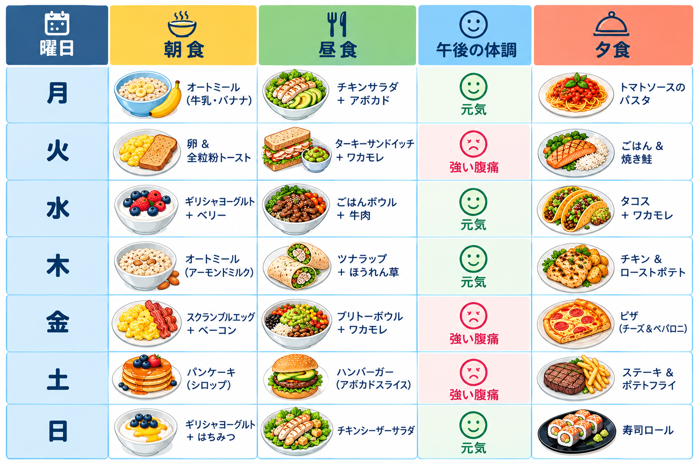

デニスは昼食後、週に2〜3回、強い腹痛と疲労を感じます。
FOOD MYSTERY CASE FILE
食堂の謎
ミステリー・フード・ディテクティブ — お腹の不調の原因を探せ！
医師は、食べたものと体調を記録する「食事日記」をつけるよう勧めました。
7日間・20種類の食事。一見バラバラな記録から、共通点を見つけよう！
🍽️手がかりファイル：デニスの1週間

表をよく観察し、体調が悪かった日と元気だった日を比べよう。
🧠AI判定アルゴリズムをまねして考えよう
※これは推理の練習です。食事記録だけでアレルギーや病気を確定することはできません。
STEP 01
体調が悪い日を選ぶ
午後の体調が「強い腹痛」になっている曜日をすべて選び、丸で囲むつもりでチェックしよう。
STEP 02
食材を照らし合わせる
腹痛が起きた日の食事を確認し、複数の日にくり返し登場する食材を書き出そう。
STEP 03
隠れたパターンを探す
腹痛があったすべての日に含まれ、元気だった日にはあまり登場しない食材があるか考えよう。
🕵️ 探偵メモ
大切なポイント：食材が同じ日に登場したことは、原因である証拠とは限りません。食事の量、調理法、食べてから症状が出るまでの時間なども調べ、実際の診断は医療専門家に任せましょう。